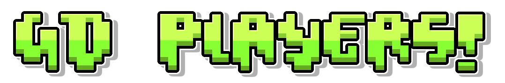

On this page you can find iconic

| Player | Bio |
|---|---|
EVW  |
EricVanWilderman is a Canadian player, who now lives in South Korea, is a Geometry Dash YouTuber, with over 900,000 subscribers on his channel. He is a renowned content creator in the Geometry Dash community, started playing the game in December 2014 and completed all the main RobTop levels. He gained popularity by attempting and beating progressively harder Demons, culminating in completing Old Cataclysm, the first time a non-GD-oriented YouTuber had beaten an Extreme Demon. |
Riot  |
Riot is a well-known American player in Geometry Dash. He has verified the former hardest Demon Bloodbath and hosted Tartarus and Acheron. Riot has completed several of the game's hardest levels, including ICE Carbon Diablo X, Cataclysm, Crimson Clutter, A Bizarre Phantasm, and Retention. After a two-year hiatus, Riot returned to Geometry Dash in October 2020 and completed his hardest Demon, Sonic Wave. He also achieved 59% and a 56-97% run on Zodiac. Recently, Riot completed Sakupen Hell, Aftermath, Phobos, Athanatos, and Auditory Breaker in just a few days. |
Doggie  |
Doggie is a skilled American player widely considered one of the best players in the game. He became the fifth victor of Kenos after Dolphy, Technical, nSwish, and Wolvez (excluding the verifier, npesta). He jumped from Killbot to Kenos (over 50 places on the Demonlist). His other major Main List Demons include Cold Sweat, Crimson Planet, Zodiac, Aerial Gleam (which he verified), The Golden, Tartarus, Arcturus, Sakupen Circles, Abyss of Darkness, Slaughterhouse (which he verified), and his current hardest Demon as well as the former Top 1 level on the Demonlist, Acheron, completed on November 1, 2022, in 121,000+ attempts. |
KrmaL  |
KrmaL (formerly Krazyman50) is a well-known and skilled North American player and level creator in Geometry Dash who grew in popularity by completing numerous Extreme Demons and became far more known for his own levels. He was, for a time, considered one of the best 60Hz players in the world for verifying Conical Depression, Falling Up, Heartbeat, and Phobos. |
Michigun  |
Michigun (December 9, 1996 – March 2021) was an Austrian mobile player in Geometry Dash. He was known for the use of triple-spikes in his levels and as his trademark, as well as for once being the fastest star-grinder in the game. He achieved 61,626 stars and created many levels that were based on temples from the Legend of Zelda video game series. ΔΔΔ |
Dorami  |
Dorami, a skilled South Korean player and level creator in Geometry Dash, is known for completing brutal Extreme Demons like Sonic Wave and The Yandere, which he also hosted and verified. He also builds and creates levels like WaveBreaker, Azure Fiesta, and Galatic Fragility. His current hardest Demon is Bloodlust, which was beaten on 6 October 2022. He is currently working on verifying The Yangire, a mega-collaboration Extreme Demon and the sequel to The Yandere, on which he has achieved a current record of 86%. |
Smiffy  |
Smiffy777 is a highly skilled player of the popular game Geometry Dash. He has achieved the top rank on the game's global leaderboards for both star count and Demon count, with over 260,000 stars and over 6,000 Demon levels beaten as of December 2023. He is the first player to beat over 5,000 Demon levels. He has completed many challenging levels, including Tenth Circle, Libertas, and The Flawless, and has a large following on YouTube, with over 60,000 subscribers. |
Serponge  |
Serponge is a prominent French level creator. He gained widespread popularity during Update 2.0 because of his complex and unique level designs, earning him the title of "FunnyGame's successor." He is also known for his mega-collaborations, including CastleMania and his AlterGame series, which features levels with different game concepts. The most popular level in the AlterGame series is MasterGame, which many consider Serponge's best work. |
npesta  |
Npesta is a skilled American player and YouTube content creator in Geometry Dash. He is most known for verifying the level Kenos, Deimos, Unearthed, WOW and Altered Ascent (although the latter have since been updated and re-verified by other people). He also completed Zodiac on June 21, 2022, and Oblivion on February 14, 2023, both his hardest Demons at their respective completions. His hardest Demon is Edge of Destiny, which was completed on September 19, 2023. He is also the creator of the Extreme Demon Roulette challenge. On top of this, npesta is known for making highly edited content with a lot of commentary on his YouTube channel, which has garnered over 304,000 subscribers as of December 4, 2023. |